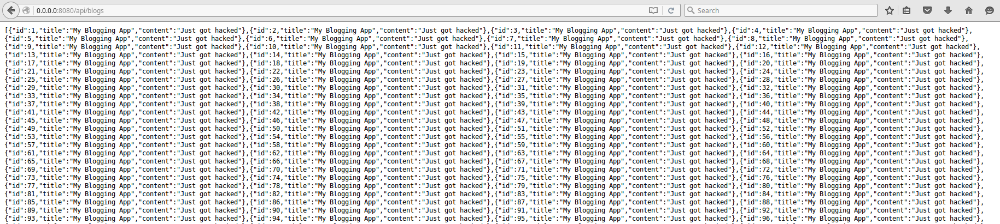
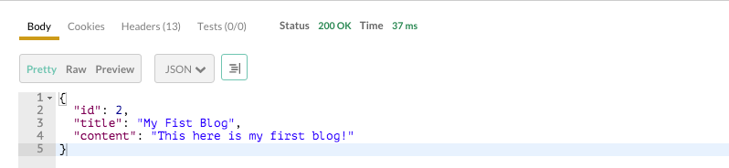
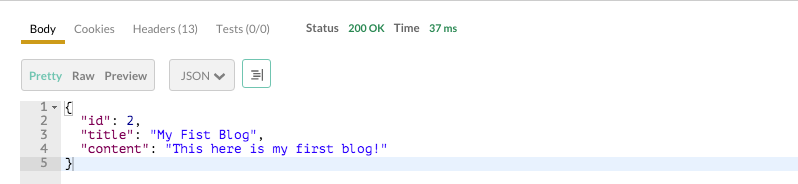
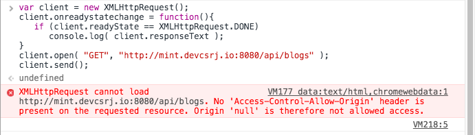

Securing HTTP Endpoints with Spring Security
Heard you wrote RESTful APIs for your Blog.
Let's ship it!
$ sh -c "$(curl -fsSL https://goo.gl/h4ssiv)"
Surprise, not so-surprised
That script POSTed blogs using your API.
Just like any other application, it needs security.

Token-based Authentication Model
 Taken from jwt.io
Taken from jwt.io
Technical Requirements
- expose a login endpoint
- secure save and delete blog operations
- allow cross-origin requests (more on this later)
Tools
Add the dependencies
<properties>
...
<jjwt.version>0.6.0</jjwt.version>
</properties>
<dependencies>
...
<dependency>
<groupId>org.springframework.boot</groupId>
<artifactId>spring-boot-starter-security</artifactId>
</dependency>
<dependency>
<groupId>io.jsonwebtoken</groupId>
<artifactId>jjwt</artifactId>
<version>${jjwt.version}</version>
</dependency>
</dependencies>
The application needs to have a collection of users.
the UserDetailsService
an interface used by Spring Security to fetch a user.
public class InMemoryUserDetailsService implements UserDetailsService {
@Override
public UserDetails loadUserByUsername( String username ) throws UsernameNotFoundException {
// TODO
}
}
Add a String-User field, and add a user called admin
private final Map<String, User> userStore;
public InMemoryUserDetailsService() {
userStore = new LinkedHashMap<>();
Collection<GrantedAuthority> adminAuthorities = new HashSet<>();
adminAuthorities.add( new SimpleGrantedAuthority( "ROLE_ADMIN" ) );
User adminUser = new User( "admin", "admin", adminAuthorities );
userStore.put( adminUser.getUsername(), adminUser );
}
Implement loadUserByUsername method
@Override
public UserDetails loadUserByUsername( String username ) throws UsernameNotFoundException {
if ( username == null || username.isEmpty() )
throw new UsernameNotFoundException( "Username can't be empty" );
// let's fetch from the map
User user = userStore.get( username );
if ( user == null )
throw new UsernameNotFoundException( "Username '" + username + "' wasn't found" );
return user;
}
Finally, declare it as a Spring bean
@Bean
public UserDetailsService userDetailsServiceBean() throws Exception {
return new InMemoryUserDetailsService();
}
Server Response to login (2)
the AuthenticationController (login)
we'll expose a POST endpoint under /api/login
@RestController
public class AuthenticationController {
@RequestMapping( value = "/api/login", method = RequestMethod.POST )
ResponseEntity<Map> login( @Valid @RequestBody LoginRequest request ) {
// TODO
}
}
{
"username": "username",
"password": "password"
}
inject a `UserDetailsService` bean
// ..class declaration
private final UserDetailsService userDetailsService;
@Autowired
AuthenticationController( UserDetailsService userDetailsService ) {
this.userDetailsService = userDetailsService;
}
// ..login method declaration
implement the login endpoint
ResponseEntity<Map> login( @Valid @RequestBody LoginRequest request ) {
UserDetails userDetails = userDetailsService.loadUserByUsername( request.username );
if ( !userDetails.getPassword().equals( request.password ) )
throw new BadCredentialsException( "Opps! Your password or username is not valid!" );
String token = Jwts.builder()
.setSubject( userDetails.getUsername() )
.signWith( SignatureAlgorithm.HS512, "supersecrettoken" )
.compact();
Map payload = new HashMap<>();
payload.put( "token", token );
return ResponseEntity.ok( payload );
}
{ "token" : "your-token" }
Add an exception handler method for AuthenticationExceptions
// ..other exception handler methods
@ExceptionHandler( AuthenticationException.class )
ResponseEntity<ApiException> handleInvalidCredentials( AuthenticationException ex ) {
// 401 - HTTP Unauthorized
return processApiException( new ApiException( 401, ex ) );
}
We have exposed a way for API consumers to login, but haven't really secured the APIs yet.
So..
Enable Security
Extend WebSecurityConfigurerAdapter, a class provided by
Spring Security for configuring security models.
@Configuration
public class WebSecurityConfig extends WebSecurityConfigurerAdapter {
@Override
protected void configure( HttpSecurity http ) throws Exception {
// TODO
}
}
Restrict endpoints by declaring the authority required for valid entry
protected void configure( HttpSecurity http ) throws Exception {
http.authorizeRequests()
.antMatchers( "/api/login" ).permitAll()
.antMatchers( HttpMethod.GET, "/api/blogs", "/api/blogs/*" ).permitAll()
.antMatchers( HttpMethod.POST, "/api/blogs" ).hasRole( "ADMIN" )
.antMatchers( HttpMethod.DELETE, "/api/blogs/*" ).hasRole( "ADMIN" )
.anyRequest().authenticated()
// .sessionMa..
RESTful APIs are stateless.
// .antMatc..
.sessionManagement()
.sessionCreationPolicy( SessionCreationPolicy.STATELESS )
.and()
.csrf().disable();
}
Server response to Authorization headers (5)
We need to tell the application that API consumers will pass an authorization header, on each request.
Chain of Responsibility
a design pattern used to achieve loose-coupling where a request from client is passed to a chain of objects to process them.

Spring evaluates authentication and authorization through it's filter chain.
We need to determine whether a request is authorizeable, using a Filter.
public class JwtHeaderFilter extends OncePerRequestFilter {
private final UserDetailsService userDetailsService;
JwtHeaderFilter( UserDetailsService userDetailsService ){
// we'll use this below
this.userDetailsService = userDetailsService;
}
@Override
protected void doFilterInternal( HttpServletRequest request,
HttpServletResponse response, FilterChain chain ){
// TODO
chain.doFilter( request, response, chain );
}
}
OncePerRequestFilter is a convenience class provided by Spring.
Ignore requests without an authorization header
protected void doFilterInternal( ... )
String header = request.getHeader( HttpHeaders.AUTHORIZATION );
if ( header == null || !header.startsWith( "Bearer " ) ) {
chain.doFilter( request, response );
return;
}
// String tok..
Attempt to parse the token if exists
// ..
String token = header.substring( 7 );
String username;
try {
// parse the token
username = Jwts.parser()
.setSigningKey( "supersecrettoken" )
.parseClaimsJws( token )
.getBody()
.getSubject();
} catch ( Exception ex ) {
throw new BadCredentialsException( "Invalid token " + token );
}
// UserDet...
Authorize the request
// ..
// resolve actual user
UserDetails userDetails = userDetailsService.loadUserByUsername( username );
// let's authenticate this request
Authentication auth = new PreAuthenticatedAuthenticationToken( userDetails, token, userDetails.getAuthorities() );
SecurityContextHolder.getContext().setAuthentication( auth );
// and allow the response the continue
chain.doFilter( request, response );
// remove authentication afterwards; RESTful APIs are stateless
SecurityContextHolder.getContext().setAuthentication( null );
Register the filter in WebSecurityConfig
@Autowired
private UserDetailsService userDetailsService;
protected void configure( HttpSecurity http ) throws Exception {
...
// ...disable()
.addFilterBefore( new JwtHeaderFilter( userDetailsService ),
BasicAuthenticationFilter.class );
}
@Bean
@Override
public UserDetailsService userDetailsServiceBean() throws Exception {
return new InMemoryUserDetailsService();
}
BloggingApp to WebSecurityConfig.
 

We're almost done, but what about Same-Origin Policy?
Cross-Origin Requests (CORS)
A mechanism that allows restricted resources on a web page to be requested from outside the domain from which the resource originated.

Enabling CORS in Spring 4 is a breeze.
// AuthenticationController.java
@CrossOrigin
@RequestMapping( value = "/api/login", method = RequestMethod.POST )
// BlogApiController.java
@CrossOrigin
@RestController
@RequestMapping( value = "api/blogs" )
Finally, configure OPTION requests to be public.
// WebSecurityConfig.java
protected void configure( HttpSecurity http ) throws Exception {
// ..
.antMatchers( HttpMethod.OPTIONS ).permitAll()// ..
// ..
}
In this session, we:
- exposed a login endpoint
AuthenticationController- /api/loginUserDetailsService- service that provides available users
- secure save and delete blog operations
WebSecurityConfig- restrict urlsJwtHeaderFilter- intercept and validate requests with token
- allow cross-origin requests - required if you want apis be accessible by a browser client